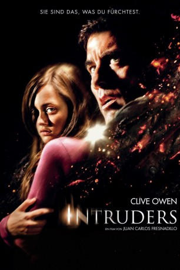

#5930 Intruders
 
 IMDB-Wertung: 5.4 / 10
IMDB-Wertung: 5.4 / 10  Metascore: 0
Metascore: 0 
Zwei Städte, zwei Familien. Die Kinder Juan und Mia werden in verschiedenen Ländern von ähnlichen Alpträumen heimgesucht – ein dämonisches Wesen will von ihnen Besitz ergreifen. Als ihre Eltern die unheimliche Bedrohung am eigenen Leib erfahren, stehen sie der Gefahr ohnmächtig gegenüber. Es gibt nur einen Ausweg: Sie müssen sich den eigenen Ängsten stellen, um ihre Kinder zu retten ...
Jahr: 2011
Dauer: 100 Minuten
FSK: 16
Land: USA Studio: Millennium EntertainmentTonspuren: DTS - ,
Untertitel: Deutsch, Englisch,
Auflösung: 1080p (1920x816) Größe: 5263 MB
Genre: Thriller, Horror, Fantasy
Regisseur: Juan Carlos Fresnadillo
Drehbuch: Niall Leonard
Soundtrack:
Darsteller:
Datei: X:\2011(G-M)\Intruders (2011, FSK16, 1920x816).mkv seit 06.04.2017
Festplatte: HD 2011(G-Z)
 Es gibt insgesamt 100 Filme in der Gruppe '2011(G-M)'
Es gibt insgesamt 100 Filme in der Gruppe '2011(G-M)'